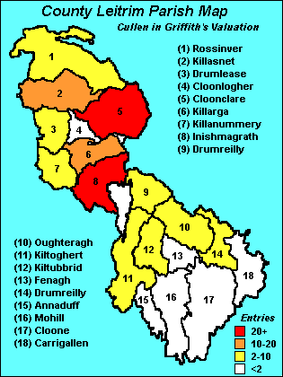

| Follow the above link to the main page for this topic or click the graphic below to visit the Homepage. |
 | Griffith's Valuation Cullens in Co Leitrim, Ireland Various sources |
 | Tables of individual entries for each parish are listed below. The parish map of Co Leitrim, on the left, shows the distribution of Cullen landowners in Co. Leitrim from the data in Griffith's Valuation. |
| Last Name | First Name | Town / Townland |
|---|---|---|
| Cullen | Garrett | Aghavanny |
| Cullen | Anthony | Ardmoneen |
| Cullen | Garrett | Ardmoneen |
| Cullen | James | Ardmoneen |
| Cullen | Thomas | Ardmoneen |
| Cullen | Thomas Jr. | Ardmoneen |
| Cullen | John | Ballaghnabehy |
| Cullen | John | Briscloonagh |
| Cullen | John Jr. | Briscloonagh |
| Cullen | Thomas | Brockagh Upper |
| Cullen | Michael | Camderry |
| Cullen | Anne | Carrickleitrim |
| Cullen | Cormac | Carrickleitrim |
| Cullen | James | Carrickleitrim |
| Cullen | James Jr. | Carrickleitrim |
| Cullen | Charles | Carrickrevagh |
| Cullen | Thomas | Carrickrevagh |
| Cullen | Michael | Cleggan |
| Cullen | Thomas | Cleggan |
| Cullen | Michael | Cloonaghmore |
| Cullen | Michael Jr. | Cloonaghmore |
| Cullen | Owen | Cloonaghmore |
| Cullen | Owen | Corracloona |
| Cullen | Terence | Corracloona |
| Cullen | Thomas | Cuilties |
| Cullen | Francis | Cullentragh |
| Cullen | Patrick | Cullentragh |
| Cullen | Michael | Druminshin |
| Cullen | Thomas | Druminshin |
| Cullen | James | Killycloghan |
| Cullen | Thomas | Killycloghan |
| Cullen | Daniel | Kiltyclogher |
| Cullen | Francis | Kiltyclogher |
| Cullen | Owen | Kiltyclogher |
| Cullen | Thomas | Kiltyclogher |
| Cullen | Laurence | Lacoon |
| Cullen | James | Laghty Barr |
| Cullen | James Jr. | Laghty Barr |
| Cullen | Michael | Laghty Barr |
| Cullen | James Jr. | Loughros |
| Cullen | Anthony | Meenkeeragh |
| Cullen | Anthony Jr. | Meenkeeragh |
| Cullen | Charles | Meenkeeragh |
| Cullen | James | Meenkeeragh |
| Cullen | James Jr. | Meenkeeragh |
| Cullen | Michael | Meenkeeragh |
| Cullen | Michael Jr. | Meenkeeragh |
| Cullen | Owen | Meenkeeragh |
| Cullen | Owen Jr. | Meenkeeragh |
| Cullen | Terence | Meenkeeragh |
| Cullen | Thomas | Meenkeeragh |
| Cullen | Catherine | Moneenageer |
| Cullen | Margaret | Moneenshinnagh |
| Cullen | Catherine | Mullaun |
| Cullen | Cormac | Ramooney |
| Cullen | Cormick | Ross |
| Cullen | Cormick Jr. | Ross |
| Cullen | James Jr. | Ross |
| Cullen | Ellen | Sranagross |
| Last Name | First Name | Town / Townland |
|---|---|---|
| Cullen | James | Creenagh |
| Last Name | First Name | Town / Townland |
|---|---|---|
| Cullen | Joseph | Larkfield |
| Last Name | First Name | Town / Townland |
|---|---|---|
| Cullen | Bridget | Carrigeencor |
| Cullen | David | Drumahaire Town of Drumahaire |
| Cullen | Thomas | Killaleen |
| Cullen | John | Morerah |
| Last Name | First Name | Town / Townland |
|---|---|---|
| Cullen | Rose | Cleighran Beg |
| Cullen | James | Drumnafinnila |
| Cullen | Rose | Drumristin |
| Cullen | Michael | Tullynapurtlin |
| Last Name | First Name | Town / Townland |
|---|---|---|
| Cullen | Peter | Aghamore |
| Cullen | Peter | Ardlougher |
| Cullen | Francis Nesbitt | Bargowla |
| Cullen | Francis Nesbitt | Boleymaguire |
| Cullen | Francis Nesbitt | Braudphark |
| Cullen | Patrick | Canbeg |
| Cullen | Francis Nesbitt | Cavan |
| Cullen | Anne | Cornacloy |
| Cullen | Francis Nesbitt | Corry |
| Cullen | Charles | Derrinwillin Glebe |
| Cullen | Francis Nesbit | Gowlaunrevagh |
| Cullen | Francis | Greaghnaslieve |
| Cullen | Patrick | Greaghnaslieve |
| Cullen | Francis Nesbitt | Lisfuiltaghan |
| Cullen | Farrell | Lugmeeltan |
| Cullen | Patrick | Lugmeeltan |
| Cullen | Thomas | Lugmeeltan |
| Cullen | Francis Nesbitt | Monddnatieve |
| Cullen | Francis Nesbitt | Seltan |
| Cullen | Francis Nesbitt | Seltannasaggart or Corry Mountain |
| Cullen | Patrick | Tents |
| Cullen | Garrett | Tonlegee |
| Cullen | Francis Nesbitt | Tullynamuckduff |
| Last Name | First Name | Town / Townland |
|---|---|---|
| Cullen | Francis | Corratimore |
| Cullen | Patrick | Corratimore |
| Last Name | First Name | Town / Townland |
|---|---|---|
| Cullen | John | Cloonagh |
| Cullen | William | Corderry |
| Cullen | Farrell | Curry |
| Cullen | Owen | Dergvone |
| Cullen | Pat Jr. | Fenagh |
| Cullen | Patrick | Fenagh |
| Cullen | John | Knockacullion |
| Cullen | William Park | Lackagh |
| Cullen | Hugh | Lisgavneen |
| Cullen | Michael | Treannadullagh |
| Cullen | Terence | Treannadullagh |
| Cullen | William Parke | Tullinloughan |
| Cullen | Catherine | Tullinwannia |
| Cullen | William Parke | Tullinwannia |
| Cullen | Patrick | Tullynacross |
| Last Name | First Name | Town / Townland |
|---|---|---|
| Cullen | Patrick | Brackary Beg |
| Cullen | Patrick Jr. | Brackary Beg |
| Cullen | Carncross Thos | Cullionboy |
| Cullen | Joseph | Diffreen |
| Cullen | Ellen | Drummahan |
| Cullen | Ellen | Drummahan |
| Cullen | Joseph | Faughary |
| Cullen | Patrick | Faughary |
| Cullen | Carncross Thos. | Gubinea |
| Cullen | John Evans | Largy |
| Cullen | Carncross Thos. | Leckanarainey |
| Cullen | Patrick | Lisnabrack |
| Cullen | Carncross Thos. | Sracleighreen |
| Cullen | James | Tawnymoyle |
| Cullen | John | Tawnymoyle |
| Cullen | John Evans | Tully |
| Last Name | First Name | Town / Townland |
|---|---|---|
| Cullen | Daniel | Ballynanty Beg |
| Cullen | Daniel | Monabraher |
| Cullen | Daniel | Priors-Land (Thomond-Gate Road) |
| Last Name | First Name | Town / Townland |
|---|---|---|
| Cullen | Matthew | Drumgorman |
| Cullen | Martin | Drumkeeran |
| Cullen | Thomas | Drumkeeran |
| Cullen | Michael | Effrinagh |
| Cullen | William | Town of Carrick-On-Shannon Main Street |
| Cullen | Mary | Tullylannan |
| Last Name | First Name | Town / Townland |
|---|---|---|
| Cullen | Patrick | Carrick |
| Cullen | Patrick | Crummy |
| Cullen | Michael | Currragha |
| Cullen | Patrick | Currragha |
| Last Name | First Name | Town / Townland |
|---|---|---|
| Cullen | Patrick | Carrick |
| Cullen | Patrick | Crummy |
| Cullen | Michael | Currragha |
| Cullen | Patrick | Currragha |
| Last Name | First Name | Town / Townland |
|---|---|---|
| Cullen | John | Lisomadaun |
| Last Name | First Name | Town / Townland |
|---|---|---|
| Cullen | James | Aghlin |
| Cullen | James Jr. | Aghlin |
| Cullen | Mary | Aghlin |
| Cullen | Michael | Derrinkeherr (Raycroft) |
| Last Name | First Name | Town / Townland |
|---|---|---|
| Cullen | Mary | Cloontyprughlish |
| Cullen | Michael | Cloontyprughlish |
| Cullen | James | Crumpaun |
| Cullen | Patrick | Crumpaun |
| Cullen | Patrick Jr. | Crumpaun |